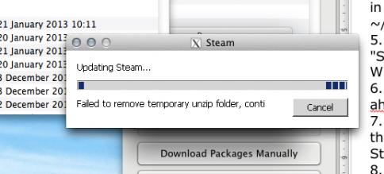

Does lowering the graphics quality help?
Is there a way to install the Wine-Port of Black Mesa into the sourcemods folder of your Mac-native Steam App?
I’m a total noob btw, this is my first ever attampt at porting something 
Help would be much appreciated!
well it seems even if it played on mac without wine
it seriously does not work properly
I’ve used Crossover Games on my Mac (MacBook Pro 2008 Unibody 8GB RAM and integrated graphics only). It ran fine, not on the highest settings, but there were no bugs or any problems at all, other than occasional frame rate slowdowns.
Then Crossover downloaded an update and as usual, it broke everything, I got angry and installed Windows through BootCamp. It runs a LOT better under Windows, my settings are maxed out and my frame rate is smooth, everything looks and feels amazing.
I definitely recommend installing Windows, it will takes 40 GB of space including Steam and all the crap that Steam requires. You can always easily erase and reclaim that space later.
Hey I followed your instructions and everything seems to work apart from an issue i have installing and starting up steam.
Steam says it is updating but then appears to get caught in a loop of extracting, installing and then failing to remove a temporary folder - see screenshot which is attached. I think this issue is unique to me, is there a way to solve it?

Honestly I don’t know what is going wrong, but I have a couple of things for you to try.
- try to click “cancel” when it tries to update or clean up. it might just skip it.
- don’t update Steam. go in offline mode.
Hope it helps.
thanks for the quick reply, how do i start steam, or steamwine as it is called, in offline mode? do i turn off my internet or is there a setting somewhere?
many thanks,
ste
I guess the easiest way is to turn off your internet.
I’m not trying to offend you, but your guide sucks. It has blindingly obvious gaps, or perhaps it is no longer relevant to the version of Wineskin that is currently available, either way, this guide is nearly worthless.
Thanks for the feedback! As far as I can tell the guide is still relevant. What is outdated? What did you find confusing? Sorry, but the gaps are not evident to me, please be more specific.
I’m both a mac and windows user, but I only have a mac desktop and a windows laptop. The other windows computer I have is to outdated for this game, which is used as an arcade machine. But seeing SDK 2007 not being on mac but 2006 and 2013 is makes me ponder why 2007 isn’t .
The only thing I seem to be getting from any source i just dual boot windows which is understandable. But I don’t know if my setup can handle that. I hope SDK 2007 becomes available for mac someday. most likely not, but hey there is room for hope.
SDK 2007 will not be available on Mac ever. Mods that want Mac support need to move to 2009. Whether or not BMS ports to it is up in the air at the moment.
Hi hoping someone can help, i have installed steamwine and done all steps upto the last one, i can see the black mesa game in my steam library (running windows steam through wineskin) but it wont let me play it, i click the button but nothing happens… although having known little about it until now i have been looking at bootcamp as an option, is this better/easier? will i have to re-download the files for windows? and are there any obvious risks to my computer because tbf every experience i have ever had with windows has been painfully infuriating… hence the fact i have had a mac since 2006 (although this one is much newer and shinier 
Cheers in advance!
Bootcamp is a lot easier! You’ll have to reinstall the 2007 SDK Base and the mod, but that’s really not a big deal. I’ve been using Bootcamp since I bought my iMac and I haven’t had any major problems. This also lets you play plenty of other HL2/2007 based mods that don’t work on OSX. And pretty much any other game that isn’t OSX compatible.
If you’re dead set on playing BM on OSX and can’t get Wineskin to work, then you’ll just have to wait. And that’s if the devs even plan on porting it. I haven’t tried Wineskin, but I did manage to get it to “work” by fiddling with the gameinfo.txt file. While it does load (after many crashes), it’s too broken to play. With the release of SDK 2013 (which works on OSX), I hope they port it.
I just installed Source SDK Base 2007 on my Mountain Lion system. Does that mean it’s now possible for Black Mesa to run native on Mac?
i found this mac version of bm at inmac.org but it is in russion and crashes alot for me cant get pass
ch 1 with this version without it crashing maybe someone can fix it so it dosent crash all the time.
There is no reason for there not to be a mac version anymore, the Source SDK Base 2007 is now on mac.
That’s like making a car waterproof and then claiming it’s a boat.
Indeed, it looks as if extending support to Mac OS X (and Linux) would involve bringing the game over to the 2013 Source SDK. And that sounds like a serious undertaking.
They’ve already done that. The free version will use that engine version, the paid version will use a more fleshed out commercial engine version.